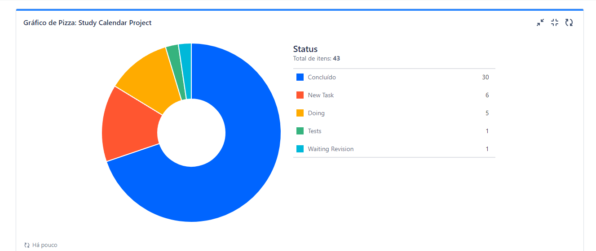

Acesso rápido
Página inicial
Me conheça
Contato
O calendário de estudos, chamado aqui de "Study Calendar Project" (para seguir a uniformidade do idioma no core do projeto) foi baseado em uma necessidade real.
A alguns anos eu adotei o uso de um controle de estudos, uma forma de quantificar e estabeler metas sob o tempo que dedico para estudar, ao longo deste período, usei o calendário em formato de planilha, por um tempo no excel e por outro no sheets, porém, apesar de bastante eficiente eu sentia falta de automações na rotina e até criei algumas, mas, ainda sim, não estava feliz com o resultado. Veja abaixo uma imagem da ultima versão, em planilha, do calendário:
Quando comecei a estudar programação, em 2021, planejei criar um programa baseado nesta planilha, mas, não consegui adquirir o conhecimento necessário e ainda estava dando os primeiros passos com bancos de dados e, por esse motivo, não consegui imaginar uma forma de criar a aplicação sem precisar que fosse instalado um cliente de um banco de dados na máquina do usuário e assim deixei esse objetivo para depois.
Agora, com o atual nível que tenho, consegui tirar a ideia da cabeça e elaborar o projeto que você vai conhecer agora!
Dei o start no projeto em junho de 2023, quando estava prestes a entrar de recesso da faculdade. Naquele momento havia concluído um curso sobre JIRA e metodologia SCRUM, então, utilizei essa ferramenta como gestão do projeto, o plano inicial que tinha era lançar a aplicação até o final das minhas férias (31/07), porém, acabou levando mais tempo do que queria.
No fim das contas, o projeto ficou pronto de fato em 21/08/2023 e iniciei os testes utilizando o calendário por cerca de uma semana antes de "lança-lo ao mundo".
Além do JIRA e da metodologia SCRUM, foram usados mais algumas ferramentas, sendo:
Toda a parte de código pode ser vista no meu repositório do GitHub.
Acho bastante importante a enfâse neste gerenciamento de projeto, então, vou apresentar algumas imagens para mostrar como fiz o uso do JIRA
Gráfico dos status dos cards em 21/08/2023:
A ideia de utilizar um sistema de gestão de projeto foi para simular um trabalho em equipe, onde teria prazos e metas a estipular, também busquei ser bastante responsável com elas. Nesta outra imagem dá para ver melhor todas as stories que criei durante a construção:
O SCP (Study Calendar Project), como ficou claro, é um programa voltado a ajudar as pessoas a gerir seu tempo de estudo diário. Irei disponibilizar o download para que você possa testar e usar e também tenho uma FAQ que você pode ler aqui.
Buscando explorar as "entregas" que fiz a partir da metologia SCRUM, eu guardei todos os arquivos das versões anteriores, até a chegada da versão final e disponibilizei em uma pasta pública no Google Drive, fique a vontade para conferir o progresso observando cada versão inclusive a versão final de lançamento, falando nela, deixei uma opção de download direta para um rar desta versão que você pode baixar aqui.
Além destes conteúdos, gravei este vídeo para que possa entender melhor o projeto:
Clique para assistirTambém disponibilizo este link para o site de feedback e FAQ do projeto, para que possam tirar possíveis dúvidas a respeito do uso do programa.